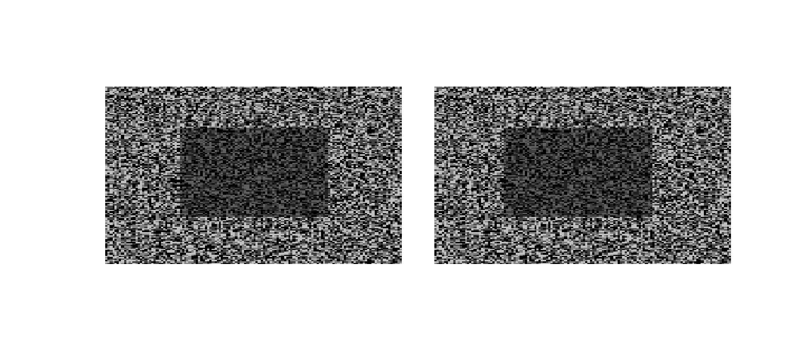
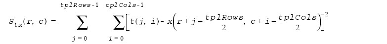
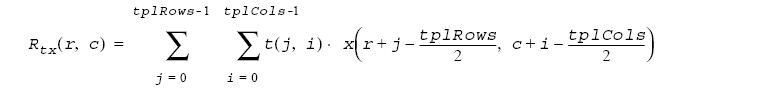
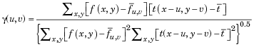

CS4495 - Spring 2015 - OMS Introduction to Computer Vision
Problem Set 2: Window-based Stereo Matching
Due Monday, February 23rd, 2015 at 7:00 AM EST
Description
In class and in Forsyth and Ponce, chapter 7 we discussed window-based approaches to estimating dense stereo correspondence. In this problem set you will implement such approaches and evaluate it on some standard stereo pairs.
What to submit
Download and unzip a template for your platform (also under: https://www.udacity.com/wiki/ud810):
Rename it to ps2_xxxx (i.e. ps2_matlab, ps2_octave, or ps2_python) and add in your solutions:
ps2_xxxx/
- input/ - input images, videos or other data supplied with the problem set
- output/ - directory containing output images and other files your code generates
- ps2.m or ps2.py - code for completing each part, esp. function calls; all functions themselves must be defined in individual function files with filename same as function name, as indicated
- *.m or *.py - Matlab/Octave function files (one function per file), Python modules, any utility code
- ps2_report.pdf - a PDF file with all output images and text responses
Zip it as ps2_xxxx.zip, and submit on T-Square.
Questions
- Use the pair pair0-L.png and pair0-R.png - a central square moved 2 pixels horizontally:

Implement the basic stereo algorithm of taking a window around every pixel in one image and search for the best match along the same scan line in the other image. You will do this both left to right and right to left. Remember: Because of depth changes (discontinuities) some pixels visible in the left image are not in the right and vice a versa. So you will match in both directions.
For this part implement the simplest thing imaginable: Look for the smallest difference between the template window (source) and the proposed location window. Use the sum of squared differences measure (SSD). We are going to take the definitions from: https://software.intel.com/en-us/node/504333
SSD is defined by:

Basically you just sum up the squares. A “good” match, then, is when this value is at a minimum. That is, you are looking for the same image patch in both images.
- Implement the SSD match algorithm as function disparity_ssd(L, R) that returns a disparity image D(y,x) such that L(y,x) = R(y,x+D(y,x)) when matching from left (L) to right (R).
Apply it to the two test images, matching from left to right:
L = im2double(imread(fullfile('input', pair0-L.png')));
R = im2double(imread(fullfile('input', pair0-R.png')));
D_L = disparity_ssd(L, R);
Also match from right to left:
D_R = disparity_ssd(R, L);
They should indicate a central square moved 2 pixels to the left or right, e.g. D_L should have value -2 in the approximate region of the central square, 0 elsewhere.
Function file: disparity_ssd.m containing function disparity_ssd (identical name)
Output: Save disparity images:
- DL(y,x) [matching from left to right] as ps2-1-a-1.png
- DR(y,x) [matching from right to left] as ps2-1-a-2.png
These disparity images may need to be scaled and shifted to display/write correctly.
- Now we’re going to try this on a real image pair: pair1-L .png and pair1-R .png. Since these are color images, create grayscale versions. You can use rgb2gray or your own function.
- Again apply your SSD match function, and create a disparity image D(y,x) such that L(y,x) = R(y,x+D(y,x)) when matching from left to right. Also match from right to left.
Output: Save disparity images, scaling/shifting as necessary:
- DL(y,x) [matching from left to right] as ps2-2-a-1.png
- DR(y,x) [matching from right to left] as ps2-2-a-2.png
- Also in the input directory are ground truth disparity images pair1-D_dropL .png and pair1-D_R .png. Compare your results.
Output: Text response - description of the differences between your results and ground truth.
- SSD is not very robust to certain perturbations. We’re going to try to see the effect of perturbations:
- Using pair1, add some Gaussian noise, either to one image or both. Make the noise sigma big enough that you can tell some noise has been added. Run SSD match again.
Output: Disparity images (DL as ps2-3-a-1.png and DR as ps2-3-a-2.png), text response - analysis of result compared to question 2. - Instead of the Gaussian noise, increase the contrast (multiplication) of one of the images by just 10%. Run SSD match again.
Output: Disparity images (DL as ps2-3-b-1.png and DR as ps2-3-b-2.png), text response - analysis of result compared to question 2.
- Now you’re going to use (not implement yourself unless you want) an improved method, called normalized correlation – this is discussed in the book. The basic idea is that we think of two image patches as vectors and compute the angle between them – much like normalized dot products.
The explicit dot product of two image patches (treated as flat vectors) is:

This result is then normalized:
- Implement a window matching stereo algorithm using some form of normalized correlation. Again, write this as a function disparity_ncorr(L, R) that returns a disparity image D(y,x) such that L(y,x) = R(y,x+D(y,x)) when matching from left (L) to right (R).
Matlab has its own function normxcorr2(template, A) which implements:

OpenCV has a variety of relevant functions and supported methods as well, such as CV_TM_CCOEFF_NORMED. You MAY use these built-in normalized correlation functions.
Test it on the original images both left to right and right to left (pair1-L.png and pair1-R.png).
Output: Disparity images (DL as ps2-4-a-1.png and DR as ps2-4-a-2.png), text response - description of how it compares to the SSD version and to the ground truth.
- Now test it on both the noisy and contrast-boosted versions from 2-a and 2-b.
Output: Disparity images (Gaussian noise: DL as ps2-4-b-1.png and DR as ps2-4-b-2.png; contrast-boosted: DL as ps2-4-b-3.png and DR as ps2-4-b-4.png), text response - analysis of results comparing original to noise and contrast-boosted images.
- Finally, there is a second pair of images: pair2-L.png and pair2-R.png
- Try your algorithms on this pair. Play with the images – smooth, sharpen, etc. Keep comparing to the ground truth (pair2-D_L.png and pair2-D_R.png).
Output: Disparity images (DL as ps2-5-a-1.png and DR as ps2-5-a-2.png), text response - analysis of what it takes to make stereo work using a window based approach.